- Generated by
 1.9.1
1.9.1
|
ERF
Energy Research and Forecasting: An Atmospheric Modeling Code
|
Classes | |
| struct | SurfaceTemperatureProvenance |
| struct | SurfaceTemperatureMigrationPlan |
| struct | SurfaceTemperatureUse |
| struct | LegacyConversionFailure |
Enumerations | |
| enum class | ContractReadStatus { Valid , Malformed , UnknownVersion } |
| enum class | LegacyInitType { WRFInput , Metgrid , Unknown } |
| enum class | StoredSurfaceTemperature { Absolute , Potential , UnknownProvenance } |
| enum class | ProvenanceOrigin { JobInfo , Assertion , None } |
| enum class | SurfaceTemperatureMigration { None , InputPressure , RestartPressure , Reject } |
| enum class | LegacySurfacePressureSource { OwnInitFile , CoarserLevel , Unavailable } |
Functions | |
| void | write_contract_version (std::ostream &output) |
| int | first_legacy_surface_temperature_level (const std::string &checkpointname, const int finest_level) |
| LegacyInitType | parse_legacy_init_type_value (std::string value) |
| const char * | legacy_init_type_name (const LegacyInitType type) |
| ContractReadStatus | read_contract_version (std::istream &input, int &version) |
| LegacyInitType | parse_legacy_init_type_from_job_info (std::istream &input) |
| StoredSurfaceTemperature | classify_stored_surface_temperature (const int marker_version, const bool has_surface_arrays, const LegacyInitType legacy_init_type) |
| SurfaceTemperatureProvenance | resolve_surface_temperature_provenance (const int marker_version, const int first_level, const LegacyInitType job_info_source, const LegacyInitType asserted_source) |
| SurfaceTemperatureMigrationPlan | plan_surface_temperature_migration (const SurfaceTemperatureProvenance &provenance, const bool restart_reads_wrfinput, const std::string &checkpointname) |
| int | first_started_later_init_file (const std::vector< double > &start_times, const double coarser_start, const double checkpoint_time) |
| LegacySurfacePressureSource | legacy_wrfinput_pressure_source (const int lev, const int num_own_init_files, const bool later_init_file_started, const bool level0_reads_low_file, const bool has_own_low_file, const bool coarser_level_recovered) |
| SurfaceTemperatureUse | restart_surface_temperature_use (const amrex::iMultiFab *lmask, const bool have_sst, const bool have_tsk) |
| AMREX_GPU_HOST_DEVICE AMREX_FORCE_INLINE amrex::Real | restart_surface_pressure (const bool has_ground_coverage, const amrex::Real ground_pressure, const amrex::Real parent_ground_pressure) |
| const char * | surface_field_name (const erf_surface_temperature::SurfaceTemperatureSource source) |
| LegacyConversionFailure | potential_to_absolute_temperature (amrex::MultiFab &field, const erf_surface_temperature::SurfaceTemperatureSource source, const SurfaceTemperatureUse &use, const amrex::MultiFab &pressure, const amrex::Real rdOcp, const amrex::Periodicity &period) |
| void | abort_on_legacy_conversion_failure (const LegacyConversionFailure &fail, const erf_surface_temperature::SurfaceTemperatureSource source, const std::string &what) |
| void | fill_outside_domain_from_nearest (amrex::MultiFab &mf, const amrex::Geometry &geom) |
| SurfaceTemperatureProvenance | read_surface_temperature_provenance (const std::string &checkpointname, const int finest_level) |
Variables | |
| constexpr int | contract_version = 2 |
| constexpr const char * | contract_file_name = "surface_temperature_contract" |
| constexpr const char * | legacy_init_type_key = "legacy_surface_temperature_init_type" |
Where the wrfinput surface pressure that a level's SST and TSK were converted with is recovered from
| Enumerator | |
|---|---|
| OwnInitFile | the PSFC of the level's own (first) init file |
| CoarserLevel | the coarser level's, interpolated: the level took its SST and TSK from it |
| Unavailable | it cannot be recovered |
Where the init type that wrote the SST_0 and TSK_0 of a checkpoint was learned from
| Enumerator | |
|---|---|
| JobInfo | the erf.init_type recorded in the job_info of the checkpoint |
| Assertion | erf.legacy_surface_temperature_init_type, in the inputs of the restart |
| None | not known |
What the SST_0 and TSK_0 arrays of a checkpoint hold
How the SST_0 and TSK_0 of a checkpoint are brought to the absolute temperature they are now kept as
|
inline |
Say how many placeholders of a converted surface field were left as they are, and abort the restart if any rank could not convert a valid cell, after each rank that could not describes its first such cell. Collective: every rank must call this.
| [in] | fail | this rank's record, from potential_to_absolute_temperature |
| [in] | source | which field was converted: SurfaceTemperatureSource::sst or ::tsk |
| [in] | what | what was being converted, to open the messages with |
Referenced by ERF::convert_legacy_surface_temperature().
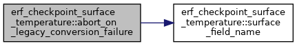
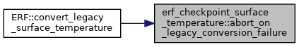
|
inline |
Classify the SST_0 and TSK_0 arrays of a checkpoint. marker_version is the version of its contract marker, or 0 if it has none; a checkpoint without one is classified by the init type that wrote it (see parse_legacy_init_type_from_job_info).
Referenced by read_surface_temperature_provenance(), and resolve_surface_temperature_provenance().
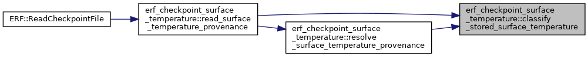
|
inline |
Give each cell of a planar field that lies outside the domain, in a direction that is not periodic, the value of the nearest cell of the domain, so that a finer level can interpolate the field up to the domain boundary. The cells of the domain must be filled.
| [in,out] | mf | planar field, cell-centered |
| [in] | geom | geometry of its level |
Referenced by ERF::convert_legacy_surface_temperature().
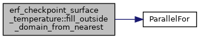
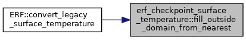
|
inline |
Return the first AMR level containing a legacy SST or TSK surface array.
The arrays are identified by their AMReX header files. A return value of -1 means that neither legacy array is present on any level.
Referenced by read_surface_temperature_provenance().
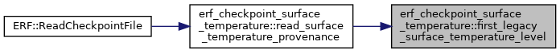
|
inline |
Of the init files of a finer level, the first after its first that had started by the time of a checkpoint, or -1 if none had. The run reads a later init file only once its start time comes, when the coarser level's start time and elapsed time reach it (ERF::ErrorEst, with the same comparison), and only then tags the level for it. Until then the level is made and kept as if it listed its first file alone.
| start_times | the start time of each init file of the level, in their order |
| coarser_start | the start time of the first init file of the coarser level |
| checkpoint_time | the elapsed time of the coarser level at the checkpoint |
Referenced by ERF::convert_legacy_surface_temperature().
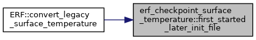
|
inline |
Referenced by read_surface_temperature_provenance().
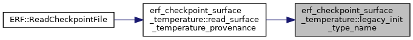
|
inline |
Where the wrfinput surface pressure of a level is recovered from, on restart from a WRFInput checkpoint that holds the SST and TSK as potential temperature. It is read from where the level read its SST and TSK, and converted them with:
| lev | AMR level |
| num_own_init_files | number of init files of the level (erf.nc_init_file_<lev>) |
| later_init_file_started | whether an init file of the level after the first may have started by the time of the checkpoint |
| level0_reads_low_file | whether level 0 reads a wrflowinp file (erf.nc_low_file) |
| has_own_low_file | whether the level has a wrflowinp file of its own |
| coarser_level_recovered | whether the surface pressure of the coarser level was recovered |
Referenced by ERF::convert_legacy_surface_temperature().
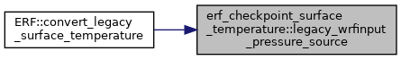
|
inline |
Read the init type that wrote a checkpoint, from the last erf.init_type assignment in its job_info. Before the marker, WRFInput stored SST and TSK as potential temperature and Metgrid as absolute temperature, so for a checkpoint without one this tells which of the two it holds. For one with a version 1 marker, which holds potential temperature, it tells which surface pressure they were converted with.
Referenced by read_surface_temperature_provenance().
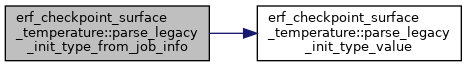
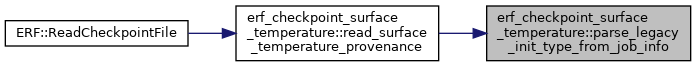
|
inline |
Referenced by parse_legacy_init_type_from_job_info(), and read_surface_temperature_provenance().
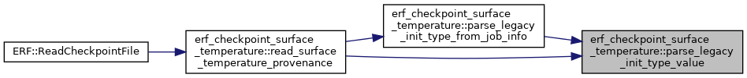
|
inline |
Decide how to bring the SST_0 and TSK_0 of a checkpoint to absolute temperature.
Arrays that hold potential temperature were converted with the surface pressure of the input they were read from, which only the init type that wrote them identifies. A WRFInput restart reads the first init file's PSFC at level 0 and, at finer levels, uses the level's own PSFC where covered and the recovered parent pressure elsewhere. The checkpoint does not record whether RemakeLevel replaced fine values with parent-interpolated potential temperature, so fine-level migration is approximate wherever that may have happened: pressure-dependent conversion and spatial interpolation do not commute. A Metgrid run converted them with its met_em surface pressure, which a restart does not read. Metgrid migration therefore uses restarted ground pressure on boxes that reach the ground and parent ground pressure for aloft-only boxes. Both old formats lack enough metadata to recover the original absolute temperatures exactly.
| provenance | what the checkpoint holds and which init type wrote it |
| restart_reads_wrfinput | whether the restart is a WRFInput run, in a build with NetCDF |
| checkpointname | name of the checkpoint, for the reason of a rejection |
Referenced by ERF::ReadCheckpointFile().
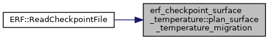
|
inline |
Convert a surface field (SST or TSK) from potential to absolute temperature with the surface pressure it was converted with, T = theta (p/p0)^(R_d/c_p). A ghost cell takes the pressure of the nearest valid cell of its box. If the ghost cannot be converted, a usable nearest valid temperature is converted to kelvin and copied into it before FillBoundary.
Every cell that holds a finite, positive potential temperature is converted, whether or not the surface layer takes the field there, so that no value the run may come to use (after a regrid or an interpolation, say) is left as a potential temperature; that takes a finite, positive surface pressure. A cell that holds none is left as it is. Of the valid cells left unconverted:
An invalid unused ghost placeholder is left as it is. A required ghost that cannot be reconstructed is counted and aborts the migration, just like an unconvertible valid cell.
| [in,out] | field | potential temperature in, absolute temperature [K] out |
| [in] | source | which field it is: SurfaceTemperatureSource::sst or ::tsk |
| [in] | use | where the surface layer takes it; the land mask, if any, on the layout of field |
| [in] | pressure | surface pressure [Pa] on the valid cells of the layout of field |
| [in] | rdOcp | R_d/c_p |
| [in] | period | periodicity of the level |
Referenced by ERF::convert_legacy_surface_temperature().
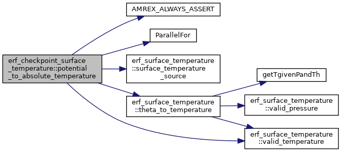
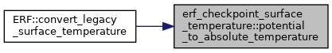
|
inline |
Parse the integer surface-temperature contract marker from a checkpoint. Every version up to contract_version is understood.
Referenced by read_surface_temperature_provenance().
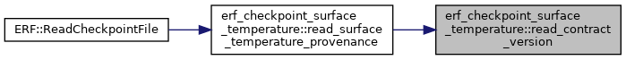
|
inline |
Read what the SST_0 and TSK_0 arrays of a checkpoint hold, and which init type wrote them.
The contract marker says what they hold. Where it does not settle that they hold absolute temperature (no marker, or version 1), the init type that wrote them is read from the erf.init_type in the job_info of the checkpoint or, where that records none, from the erf.legacy_surface_temperature_init_type assertion. Aborts on a malformed or unknown marker or an invalid assertion.
| checkpointname | name of the checkpoint directory |
| finest_level | finest AMR level of the checkpoint |
Referenced by ERF::ReadCheckpointFile().
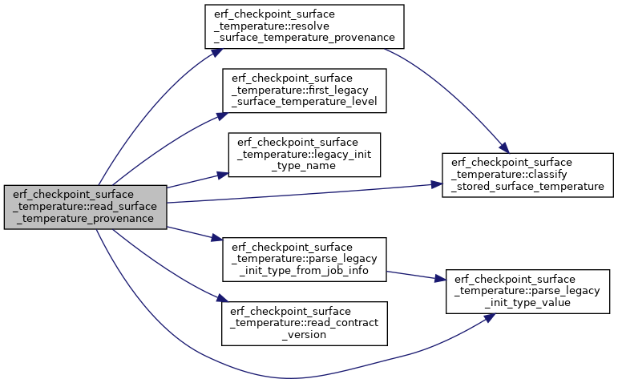
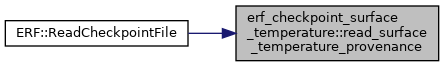
|
inline |
Establish what the SST_0 and TSK_0 of a checkpoint hold, and which init type wrote them.
The erf.init_type recorded in the job_info of the checkpoint is its provenance. The erf.legacy_surface_temperature_init_type assertion stands in for it only where the checkpoint records none. The init type of the restart plays no part: a run can be restarted with inputs other than those that wrote the checkpoint.
| marker_version | version of the contract marker, 0 if there is none |
| first_level | first AMR level holding SST_0 or TSK_0, -1 if none does |
| job_info_source | init type recorded in the job_info of the checkpoint |
| asserted_source | init type asserted by erf.legacy_surface_temperature_init_type |
Referenced by read_surface_temperature_provenance().
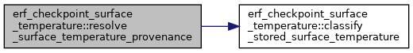
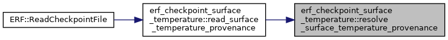
| AMREX_GPU_HOST_DEVICE AMREX_FORCE_INLINE amrex::Real erf_checkpoint_surface_temperature::restart_surface_pressure | ( | const bool | has_ground_coverage, |
| const amrex::Real | ground_pressure, | ||
| const amrex::Real | parent_ground_pressure | ||
| ) |
Select pressure for migrating one level's legacy surface fields. ground_pressure is diagnosed only where that level's grid actually reaches the domain ground. Elsewhere the cell is a refined patch aloft and must use the coarser level's ground pressure, never the lowest elevated cell as a stand-in.
Referenced by ERF::convert_legacy_surface_temperature().
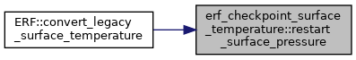
|
inline |
What decides it at a level on restart: the land mask restored from the checkpoint, and whether the level has an SST and TSK. The surface layer fills the surface temperature from them only at a level with an SST (SurfaceLayer::update_fluxes), so a level with TSK and no SST takes neither. It ignores the SST of a level with TSK whatever most.ignore_sst says, and that parameter selects nothing at a level without TSK, so it does not matter here.
| lmask | the restored land mask of the level, or nullptr |
| have_sst | whether the level has an SST once restarted |
| have_tsk | whether the level has TSK |
Referenced by ERF::convert_legacy_surface_temperature().
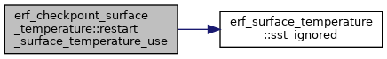
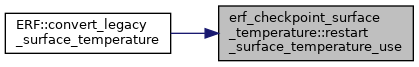
|
inline |
The name of a surface field: "SST" or "TSK"
Referenced by abort_on_legacy_conversion_failure(), and ERF::convert_legacy_surface_temperature().
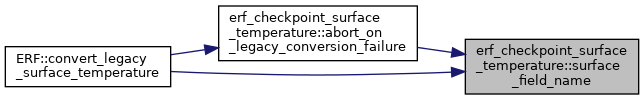
|
inline |
|
constexpr |
Name of the marker file in the checkpoint directory
Referenced by read_surface_temperature_provenance().
|
constexpr |
Version of the surface_temperature_contract marker written with a checkpoint, which says what its SST_0 and TSK_0 arrays hold:
1: potential temperature, referenced to the surface pressure of the input they were read from 2: absolute temperature [K], which the surface layer converts at the current surface pressure
Referenced by read_contract_version(), and write_contract_version().
|
constexpr |
Parameter (in the erf namespace) asserting the init type that wrote a checkpoint
Referenced by ERF::convert_legacy_surface_temperature(), plan_surface_temperature_migration(), and read_surface_temperature_provenance().